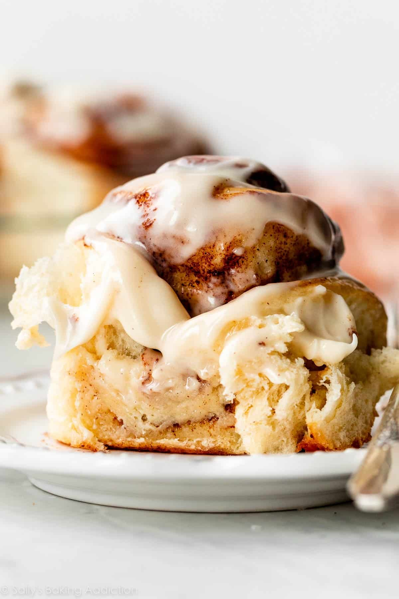

Cinnamon Rolls

My favorite Breakfast Pastry
Noting beats a warm, gooey, sweet and fluffy cinnamon roll for a morning treat with your coffee.
I've eaten thousands of cinnamon rolls all over the world, and this recipe is inspired by the finest cinnamon roll
in America, from Ann Sathers in Chicago, IL.
Ingredients
- Flour
- Sugar
- Yeast
- Whole Milk
- Butter
- Egg
Steps
- Mix Dough
- Mix cinnamon, sugar, and butter to make filling
- Knead dough until flat, spread filling
- Roll dough then cut to individual serving sizes
- Preheat oven to 375 degrees F
- Bake until golden brown
- Spread Icing on baked rolls, let cool, and serve